00读前一分钟 · 全文脉络（做完题再看也行）
⭐⭐⭐ 这是一篇「现象 → 排除浅因 → 深因」的解释文：全文就是一张原因表，每一行有一个「有效期」——技术原因在 1890 年代过期，观念原因没有过期。四道题各问表上的一格：
| 格 | 内容 | 有效期 | 题 |
|---|---|---|---|
| 钩子（少数） | 我的笑脸照：推文改变了人们对维人的印象（①） | —— | 31B |
| 让步（少数 vs 多数） | 我的收藏只是极小一部分（②❶ 主干）；大多数人阴郁僵硬（②❶ which 从句） | —— | 32C |
| 设问（全文的题目） | How do we explain this trend?（②❷） | —— | 35C |
| 原因一 · 技术 | 曝光几分钟，笑容挂不住（③） | 1840s–50s 有效，1890s 失效（④） | 33C／D 的原料 ✗ |
| 原因二 · 牙齿 → 尊严 | 口腔糟 → 露齿失尊严（⑤） | 1890s 仍有效 | 33A |
| 原因三 · 阶层规矩 | 咧嘴笑是下层人的样子；连吐温都反对（⑥） | 1890s 仍有效 | 34B |
One explanation might be——作者对自己的解释也只用 might；33 题题干照抄了这个 might（What might have kept …）。题干的情态词与原文一致，就是在告诉你「我问的就是这一句提出的解释」（新卡 R302）。▸ 2020 T1 归 → T2 账 → T3 驳 → T4 时 → 2021 T1 让 → T2 证 → T3 因：T1 是评论（问作者站哪），T2 是报道（问证据支持谁），T3 是解释文（问原因表的哪一格）——同一套卷子三篇三种读法。
▸ 一根线从头走到尾：「笑」的词族——smiling（①❶）→ laugh · laughter（①❸❹）→ fixed grin（③❷）→ smiles · smile（④❷）→ cheesy grin（⑤❶）→ toothy grin · gurn and grin · smile as wide as（⑥❶）→ hearty laugh · silly, foolish smile（⑥❷）。前半篇的笑是褒义（有人情味），后半篇的笑越来越贬（cheesy · toothy · silly, foolish）——感情色彩的翻转就是全文论证的翻转：当时的人眼里，咧嘴笑不是可爱，是丢人。
00+读前背景 · 十个专名与事实（常识只帮读，不帮选——你知道当年的人牙不好，33 题照样要从 ⑤❷❸ 取证；你知道吐温是幽默大师，34A「发人深省」照样是错的）
本篇是《BBC 历史》杂志 2020 年 1 月的一篇历史随笔，作者是历史学者，用第一人称写（I’ve become preoccupied · I need to concede · we must look elsewhere）。这和 T2 的科学报道不一样：观点就挂在作者自己名下——所以 32 题题干写 What does the author say，34 题问作者引吐温的目的。
| 专名 / 事实 | 是什么 | 在本文里的作用 |
|---|---|---|
| BBC History Magazine（《BBC 历史》） | 英国面向大众的历史月刊；本篇 2020 年 1 月刊（据黄皮书），原题 Smiling Victorians: Why It’s a Myth That Our Ancestors Didn’t Smile for Pictures | ⭐⭐ 原刊标题说「不笑是个迷思」，考卷留下的六段却有四段在解释「为什么大多数不笑」 ⟹ 按考卷答题：35 题的正解是「为什么大多数维人表情严肃」，不是「维人其实爱笑」（老卡 R255：考卷是删过的） |
| Victorians（维多利亚人） | 维多利亚女王在位 1837–1901 年间的英国人；后世印象是道德严谨、拘谨刻板 | ①❶ 19th-century prudery 就是这个刻板印象——⭐⭐⭐ 31 题：推文的效果就是动摇它 |
| 社交媒体（2023 年起改名 X） | ①❷——⭐ 只是作者发照片的地方；31C 硬把它拔成「社交媒体在维多利亚研究中的作用」 | |
| photographic portraiture（肖像摄影） | 19 世纪中叶起照相馆兴起，普通人也能留影；摄影棚里常用画出来的布景（painted backdrops） | ②❶——⭐⭐ 1840–1900 的「海量肖像照」是分母，作者的笑脸照是极小的分子 ⟹ 32C |
| daguerreotype（达盖尔银版摄影法） | 法国人达盖尔发明、1839 年公布：在镀银铜板上直接成像，早期曝光要几分钟 | ③❶ 括号里自带解释（producing an image on a silvered copper plate）——生词带了括号注释，读括号即可，不必认识它 |
| exposure time（曝光时间） | 快门打开、感光材料受光的时长；越长，被拍者越要一动不动 | ③④ 的核心词——⭐⭐ 全文的时间线就挂在它身上：notoriously long（1840s–50s）→ much quicker（1880s）→ almost instantaneous |
| Box Brownie（布朗尼盒式相机） | 柯达 1900 年 2 月推出的廉价盒式相机，售价 1 美元，让摄影走进普通家庭（WebSearch 核） | ④❶——⚠️ 原文把它和「到 1880 年代」写在一句里，严格说时间偏晚；但④只用它说明「相机已经便携、曝光已经很快」，考题不考年份。33D「不信任新发明」就从这句借的料 |
| dentistry · hygiene（牙科 · 口腔卫生） | 原文 before the birth of proper dentistry：在像样的牙科出现以前——普通人牙齿发黑、缺损是常态 | ⑤❷❸——⭐⭐⭐ 33 题正解 A 的原料；pearly whites（口语「一口白牙」）是 the preserve of the super-rich |
| music hall · Cheshire Cat（杂耍剧场 · 柴郡猫） | music hall 是维多利亚时代的大众歌舞杂耍剧场；柴郡猫是刘易斯·卡罗尔《爱丽丝漫游奇境》（1865）里那只咧嘴笑、会只剩笑容的猫 | ⑥❶——⭐⭐ 一串「下层人」的例子（drunks · tramps · music hall performers）＋ 一个夸张比喻（柴郡猫），全是为了衬出 not a becoming look for properly bred persons |
| Mark Twain（马克·吐温，1835–1910） | 美国作家、幽默大师，以爱笑、会逗笑闻名 | ⑥❷——⭐⭐⭐ 34 题：选他当证人，正因为他是「最不该反对笑」的人；a man who enjoyed a hearty laugh 这个同位语就是作者特意加的反差 |
▸ 该用的：知道 daguerreotype 是最早的摄影法，就明白③在讲「技术原因」；知道 music hall、tramps 是下层，就读得出⑥是在讲阶层；知道吐温以幽默闻名，就读得出 Even 的分量。
▸ 不该用的：你知道「新技术刚出来总有人不信」，会觉得 33D 有道理——可④明说技术已不是原因；你知道站在镜头前会紧张，会觉得 33C 有道理——可③说僵硬是因为曝光长、不敢动；你知道吐温的话常被当作警句，会觉得 34A「发人深省」也行——可题干问的是引他「为了证明什么」；你记得原刊标题说「不笑是迷思」，会想选一个「维人其实爱笑」的主旨——可考卷四段都在解释「为什么不笑」。
🔗 跨篇（站内已有篇目）：
▸ 2021 T1《火车票价》／T2《给穷人发钱也救了森林》：同一套卷子前两篇。T1 每题问「让—转」的哪一侧，T2 每题问「哪条证据支持哪个看法」，T3 每题问「原因表的哪一格」——三篇的共同点是答案都在一张「格子表」里，干扰项是把料挪到隔壁格。
▸ 2014 T2《美国律师业的两个病根》：同是「一个现象 × 几个原因」的格子文——那篇是一个问题、两个原因、两副药方，细节题一题挂一格、主旨题要整张表；本篇多了一步按时间先排除一个原因（技术在 1890 年代过期），再给两个。读法相同：先列原因表，再看每道题问哪一行；35 题和那篇的主旨题一样，要的是「为什么」这整张表。
01原文精读 · 全文六段（本机识别成文字 · 可切回原卷）
📄 原文由你的浏览器从原卷第 7 页识别成文字（每句末尾「原卷」可切回扫描图，「校对」可改错字）｜ 选中任意单词弹「查有道」（触屏长按选词；切回原卷后在扫描图上点词也能查）｜ 每句下方「↘ 跳到长难句精析」按钮跳 03 节（只有 ②❷ 一句短句不跳）｜ 虚线词 ＝ 本句重难点词，点开出卡片（正文里没认出来的才留在下面 🟡 行） ｜ 每段「意」= 该段意译（按句意转述，非逐字翻译）
① 钩子：历史学者晒出维多利亚人的笑脸照，人们惊讶地觉得那个时代有了人情味
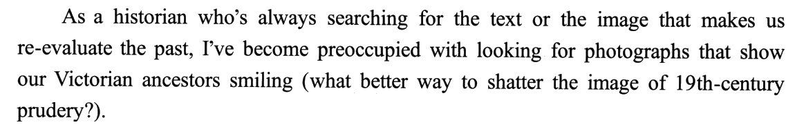
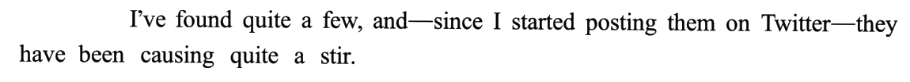
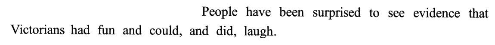
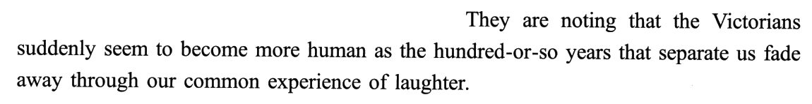
| 句 | 作用 | 信号 | 养活的选项 |
|---|---|---|---|
| ❶ | 我是谁 ＋ 我找什么 ＋ 为什么找 | As a historian · what better way to shatter the image | 31D（re-evaluate · image）· 32A（historian） |
| ❷ | 发到推特 → 热议（概述） | causing quite a stir | 31C（Twitter → 社交媒体的作用） |
| ❸ | 热议内容一：惊讶 | surprised to see evidence | 31B ✔ |
| ❹ | 热议内容二：更有人情味（详述） | seem to become more human | 31B ✔ · 31A（photographs · seem to become 拼成「发展」） |
⭐ re-evaluate 出现在 ❶，可它的主语是「文本或图像」、宾语是「过去」——31D re-evaluated the Victorians’ notion of public image 把它挪成「推文重估了维人自己的形象观」，谁看谁被调了头：原文是「今人看维人」，D 写成「维人看公众形象」（老卡 R8）。
② 让步 ＋ 设问：我的笑脸照只是极小一部分，绝大多数人表情阴郁、姿势僵硬——怎么解释？
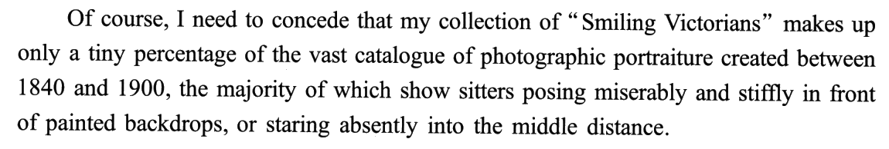
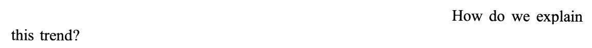
| 成分 | 说的是谁 | 信号 | 养活的选项 |
|---|---|---|---|
| ❶ 主干 | 我的收藏：只占极小一部分 | Of course, I need to concede that · only a tiny percentage of | 32C ✔ |
| ❶ which 从句 | 别人的大多数：阴郁、僵硬、发呆 | the majority of which | 32D（社会习俗）· 33C（stiffly → 紧张） |
| ❷ | 全文的问题 | How do we explain this trend? | 35C ✔（explain ＝ Why · trend ＝ most … look stern） |
⭐ sitter 不是「坐着的人」，是「（画像、照相的）被画者、被拍者」——③❶ 再出现一次。
③ 原因一（技术）：早期曝光要几分钟，笑容挂不住，于是面无表情成了常态
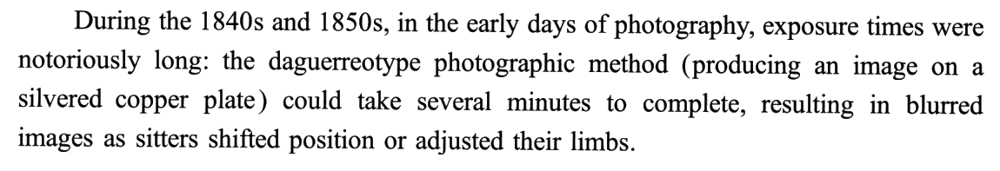
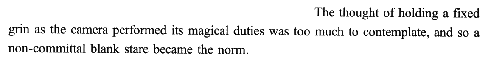
| 环 | 原文信号 | 说明 |
|---|---|---|
| 因 | exposure times were notoriously long | 冒号后举达盖尔法为证 |
| 后果 | resulting in blurred images | 分词作结果状语 |
| 推论 | was too much to contemplate | too … to 结构：「太……以至于不能」 |
| 结果 | and so … became the norm | ⟹ 回答了 ②❷ 的问题——但只对早期有效 |
⭐ magical duties 是作者的调侃：把相机拟人化，写它在「履行神奇的职责」——这种轻松的笔调贯穿全文（⑥ 的柴郡猫也是），不影响论证，但说明作者的态度是好奇、不是批判。
④ 转折：到 1880 年代曝光已近乎一瞬，1890 年代笑容已不难拍——技术解释过期，原因得另找
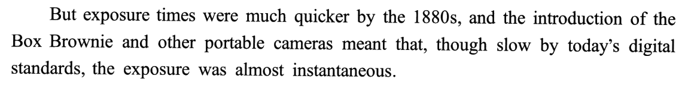
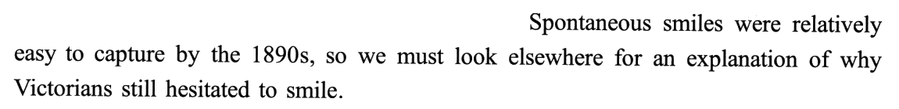
| 时间 | 曝光 | 技术能否解释「不笑」 |
|---|---|---|
| 1840s–1850s | notoriously long（几分钟） | ✅ 能（③） |
| 1880s | much quicker · almost instantaneous | 开始不能 |
| 1890s | relatively easy to capture | ❌ 不能 ⟹ look elsewhere |
⚠️ 33D distrust of new inventions 的料就在 ❶：the introduction of the Box Brownie and other portable cameras——原文说新相机让拍照更快，D 却说人们不信任新发明。黄皮书：选项借「新技术刚出现时往往不被信任」这一常见情形设障，可第四段意在说明 80 年代后技术已不是原因。
⭐ still 是本段的眼：still hesitated to smile ＝「技术条件变了，行为没变」——行为没跟着条件变，原因就一定在条件以外。这正是解释文推进的标准一步。
⑤ 原因二：牙科出现之前口腔状况糟糕，一口好牙是巨富的专利——露齿一笑有失尊严
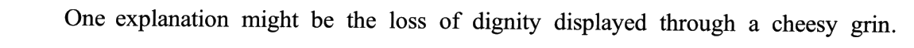
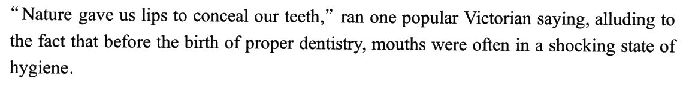
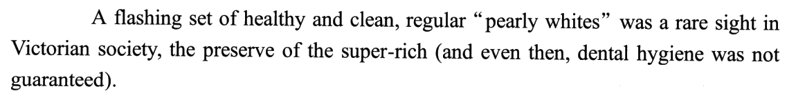
| 句 | 层 | 信号 | 33 题 |
|---|---|---|---|
| ❶ | 浅层原因：露齿失尊严 | One explanation might be | B 借「尊严」造「社交敏感」✗ |
| ❷ | 底层原因：口腔糟（常见情形） | alluding to the fact that · often in a shocking state | A ✔ |
| ❸ | 底层原因：好牙罕见（罕见情形） | a rare sight · the preserve of the super-rich | A ✔ |
⚠️ B inherent social sensitiveness 的两处硬伤：①
inherent（与生俱来）原文零支撑——失尊严是因为牙不好，不是因为维人天生敏感（老卡 R35：本源词一律追定义）；② 「社交」是从⑥的 lacked class／properly bred 借来的——⑥是 34 题的地盘（新卡 R302）。⭐ 引语的三步读法：谚语 “Nature gave us lips to conceal our teeth” 字面是「嘴唇遮牙」，alluding to 后面才是它的意思——读谚语题、引语题，永远读到解释它的那半句（老卡 R63：引语里的口语说法，用它前后的解释句去核）。
⑥ 原因三：咧嘴笑是下层人的样子，有教养的人不这样；连爱开怀大笑的马克·吐温都说傻笑定格最糟
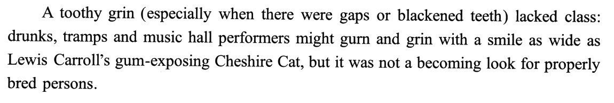
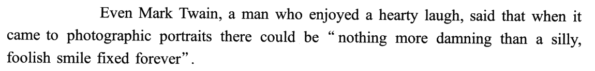
| 步 | 原文 | 作用 | 题 |
|---|---|---|---|
| 观念 | A toothy grin … lacked class | 咧嘴笑掉身份 | 35C 的第三块原料 |
| 对比 | drunks, tramps … but … properly bred persons | 谁会这样 vs 谁不会 | 33B 借「社交」✗ |
| 名人作证 | Even Mark Twain, a man who enjoyed a hearty laugh | 连最不该反对的人都反对 ⟹ 观念根深蒂固 | 34B ✔ |
⚠️ 34C a misguided attitude 方向反了：吐温赞成「照片里不该笑」（nothing more damning），C 说他认为这个态度是错的（黄皮书：与其实际看法完全相悖）。34A a thought-provoking idea 是由吐温的作家身份联想出来的——原文只用他作证，没说他的话有什么启示。
⭐ when it comes to 是写作高频：「一说到……」，用来把话题收窄到某个领域——吐温爱笑，但「一说到肖像照」就不一样了（05 素材 ⑦）。
02题目与解析（点选项即判 · 再看解析）
十五个干扰项分十二族：身份联想 2（32A historian → 史学家常用 · 34A 作家 → 发人深省）· 挪段 2（32B ③④ 曝光 → 他的收藏 · 33C ②❶ stiffly → 紧张）· 主宾调头 1（31D 今人看维人 → 维人看公众形象）· 拼接 1（31A photographs ＋ seem to become → 摄影发展）· 强加关系 1（31C 推特 → 社交媒体之于研究）· 从句当主干 1（32D 别人的大多数 → 他的收藏，还拔成「习俗」）· 捏造本源词 1（33B inherent）· 常识设障 1（33D 新技术总被怀疑）· 方向反 1（34C 他赞成 → 他认为错）· 反差当争议 1（34D 爱笑 vs 反对笑 → 有争议）· 换疑问词 1（35A How → When）· 换时代 1（35D Victorian → post-Victorian）；另 35B 局部当全文 ＋ 方向反。
⭐ 本篇最该练的是「因」：全文是一张原因表，31 问钩子的效果（目的达成）· 32 问让步句里「我那一撮」（主干，不是 which 从句）· 33 问 1890 年代仍有效的原因（年代戳先排技术类，再取⑤写得最实的一环）· 34 问名人证明了什么（Even ⟹ 根深蒂固）· 35 问全文答了什么（②❷ 的设问）。2021 T1 是五个「让」，T2 是五个「证」，T3 是五个「因」。
事实细节（推文的效果）31. According to Paragraph 1, the author’s posts on Twitter
正源：①❸ People have been surprised ＋ ①❹ suddenly seem to become more human；捷径 ①❶ shatter the image of 19th-century prudery
▸ 第一步：定位 ❷——推文
causing quite a stir（引起热议），只是「概述」；▸ 第二步：往后扩——热议的内容在 ❸❹：人们惊讶地发现维人会玩会笑，觉得他们更有人情味；seem to become 写的是人们眼里的维人变了 ⟹ impression；
▸ 第三步：反向验证——❶ 作者找笑脸照的目的就是 shatter the image（打破形象）⟹ 目的达成 ＝ 印象改变（老卡 R16 往外扩一层）。
黄皮书技巧栏（要点转述）：本题为事实细节题，关键在梳理句间关系、精准定位，并准确理解情绪表达、特殊结构（比较结构、否定／半否定结构等）的深层含义。由 causing quite a stir … People … They … 可知 ❷ 与 ❸❹ 为「概述—详述」关系，定位范围拓展为 ❷–❹；情绪表达 surprised 与比较结构 become more human 均表明「公众对维多利亚人的看法发生了转变」⟹ B。捷径：推文即「其新发现」，❶ 已提到搜寻的目的是「打破 19 世纪人在人们心中拘谨的形象」，推文影响等同于工作目的，changed people’s impression of the Victorians 同义改写 shatter the image of 19th-century。
photographs ＋ ①❹ seem to become——把「照片」和「变得」拼成「摄影技术的发展」；原文变的是人们的印象，不是技术（黄皮书：选项杂糅碎片信息 photographs、Victorians 及 seem to become（表变化）捏造出「维多利亚时期摄影技术取得了进步」）。摄影发展在③④才讲，不在题干限定的第一段（老卡 R7）。[B] changed people’s impression of the Victorians ✔ ①❶ shatter the image ＋ ①❹ seem to become more human 的同义改写。
[C] highlighted social media’s role in Victorian studies ⚠️ 强加关系：← ①❶
As a historian ＋ ①❷ Twitter——推特只是发照片的地方，研究是作者自己在做；C 把两者硬连成「社交媒体对研究至关重要」（黄皮书：选项在推特和作者的研究工作之间强加关系）。[D] re-evaluated the Victorians’ notion of public image ⚠️ 主宾调头：← ①❶
makes us re-evaluate the past ＋ the image of 19th-century prudery——原文是今人重新看待维人的形象；D 写成维人自己对公众形象的看法（黄皮书：选项将重新评价的对象「公众对维多利亚时期的人的看法」窜改为「维多利亚时期的人对公众形象的看法」）（老卡 R8）。
事实细节（让步句）32. What does the author say about the Victorian portraits he has collected?
正源：②❶ 主干 makes up only a tiny percentage of the vast catalogue
▸ 第一步：切句子——52 词的长句，Of course, I need to concede 是引子，that 从句的主干是 my collection … makes up only a tiny percentage of …，逗号后的 the majority of which 已转去说「其他大部分照片」；
▸ 第二步：只取主干——题干问「他收集的」，答案就在主干：a tiny percentage（极小一部分）vs the vast catalogue（海量），强对比 ＝ 稀少；
▸ 第三步：对词——only a tiny percentage of … created between 1840 and 1900 ↔ rare among photographs of that age ⟹ C（新卡 R305）。
黄皮书技巧栏（要点转述）：本题以事实细节题之形考查长难句，关键是切割长难句、圈定答案出处，并借助词汇对比等明晰句意。第二段 ❶ 以 Of course, I need to concede that … 引出客观事实，that 宾语从句的主干聚焦「作者收集的肖像照（my collection of ‘Smiling Victorians’）」，而嵌套的定语从句已将关注点转移至「维多利亚时期的大部分其他照片（非作者收集的照片）」，故锁定主干为答案出处。a tiny percentage of vs the vast catalogue of 强对比表明作者收集的照片在那个时代极其稀有，C 正确。
As a historian——作者是历史学者，A 就编出「这些照片被史学家广泛使用」；原文只说他自己在找、在晒（黄皮书：选项由作者身份「历史学家」捏造出「作者所收集的照片也被其他历史学家用于研究」，但文中并未提及）。[B] They show effects of different exposure times ⚠️ 挪段：← ③④
exposure times … notoriously long／much quicker——曝光讲的是「为什么大多数不笑」；作者收的全是笑脸照，展示不了不同曝光时长的效果（黄皮书：作者收集的均为微笑照片，无法展现不同曝光时长导致的不同效果（微笑 vs 无微笑））。[C] They are rare among photographs of that age ✔ only a tiny percentage of the vast catalogue 的同义改写。
[D] They mirror 19th-century social conventions ⚠️ 从句当主干 ＋ 拔高：← ②❶
the majority of which show sitters posing miserably and stiffly——那是别人的大多数，不是他的收藏；而且原文只描写了姿势表情，D 把它拔成「社会习俗」（黄皮书：选项将「大部分人拍照时姿势僵硬、表情淡漠」扭曲为「社会习俗」，且这不是作者收集的照片所反映的内容）。⭐ 反过来想更清楚：他的笑脸照恰恰是「不合习俗」的少数。
因果细节（限定年代）33. What might have kept the Victorians from smiling for pictures in the 1890s?
正源：⑤❷ mouths were often in a shocking state of hygiene ＋ ⑤❸ a rare sight in Victorian society
▸ 第一步：用年代戳排除——④ 说到 1890 年代笑容已不难拍，技术解释作废（look elsewhere）⟹ 技术一类的 C（镜头前紧张）、D（不信任新发明）先划掉；
▸ 第二步：用情态词定位——题干 What might have kept 复刻 ⑤❶ One explanation might be ⟹ 答案在⑤；同序原则也指向这里：34 题占⑥，33 的地盘是④❷–⑤；
▸ 第三步：在⑤里找因果的起点——❶ 露齿显得失尊严（浅层）← ❷❸ 牙科出现前口腔状况糟、好牙罕见（底层）⟹ 两层都是原因，选项里只有 A 对得上原文的实写：shocking state of hygiene ↔ unhealthy dental condition；
▸ 第四步：查 B 的修饰语——inherent（与生俱来）原文零支撑；social 的料来自⑥ ⟹ 划掉（新卡 R302，老卡 R35）。
黄皮书技巧栏（要点转述）：本题为因果事实题，且题干已设定时间范围，关键在：① 借助逻辑衔接词、词汇复现等厘清段间／句间关系，根据时间线索词、设问方向准确定位；② 理解谚语等抽象表达的隐含深意，抓取文中暗藏的因果关联。题干聚焦「19 世纪 90 年代维多利亚人拍照不笑的现象」、询问「原因」，由 by the 1890s … we must look elsewhere for an explanation … One explanation might be … 明确第四段末句与第五、六段间「概述有其他原因—详述具体原因」的关联，锁定答案出处为第五、六段；第五段以 alluding to the fact that … 阐释谚语、解释首句观点，… often in a shocking state of hygiene … whites was a rare sight … 从「常见情形」和「鲜见情形」两个侧面指出维多利亚人牙齿状况极差，由此明确两层因果「牙齿状况极不健康（底层原因）→ 露齿而笑显得有失尊严（浅层原因）→ 维多利亚人拍照时不笑（结果）」，只有 A 契合文意。
[B] Their inherent social sensitiveness ⚠️ 捏造本源词 ＋ 场景偷换：← ⑤❶
the loss of dignity ＋ ⑥❶ lacked class／properly bred——原文说的是「拍照时露齿会失尊严」，B 换成「社交场合」，再加一个 inherent 变成「天生对社交敏感」；可人们认为微笑有失体面的原因是牙齿糟糕，不是天性（黄皮书：选项将「拍照场景」扭曲为「社交场景」，进而由「微笑有失尊严」捏造出「社交中，人们极其在意自身形象，天生十分敏感」）。[C] Their tension before the camera ⚠️ 挪段 ＋ 因果错接：← ②❶
posing … stiffly——僵硬看着像紧张，可③已给出原因：曝光太长、不敢动；而且那是早期的事，到 1890 年代已不成立（黄皮书：第三段指出人们拍照时姿势僵硬是因为相机曝光时间太长，不敢轻易调整姿势）。[D] Their distrust of new inventions ⚠️ 常识设障：← ④❶
the introduction of the Box Brownie and other portable cameras——「新技术刚出现时不被信任」是常识，不是原文；④ 恰恰是说技术进步了、不再是原因（黄皮书：第四段意在指出 19 世纪 80 年代摄影技术已实现巨大飞跃，曝光时间长不再是人们照相不笑的原因，而非强调「人们不信任新技术」）。
写作目的（引名人）34. Mark Twain is quoted to show that the disapproval of smiles in pictures was
正源：⑥❷ Even Mark Twain, a man who enjoyed a hearty laugh ＋ nothing more damning than
▸ 第一步：题干问 is quoted to show——写作目的题，答案是吐温服务的那个论点，不是吐温本人的特点（老卡 R41）；
▸ 第二步：找 Even 的方向——Even 引出的是「最不可能这么想的人」：同位语 a man who enjoyed a hearty laugh 是作者特意加的反差；
▸ 第三步：推论——连最爱笑的人都说照片里的傻笑最糟 ⟹ 这个观念深入人心、根深蒂固 ⟹ B；再回看 ⑥❶ 的社会观念句，❶❷ 是「提出观念 → 强调它根深蒂固」的递进（新卡 R303）。
黄皮书技巧栏（要点转述）：本题考查援引名人之言的目的，解题需：① 通过语义对比、句式结构等分析援引观点，体味作者的态度；② 跳出例子本身，联系上下文梳理论证脉络。⑥❷ 中 enjoyed a hearty laugh vs nothing more damning than a … smile fixed forever 形成语义对比，且前者为补充信息（同位语部分），后者为核心内容（主干部分），其间暗含「尽管马克·吐温乐于开怀大笑，却认为拍照时坚决不能笑」，即吐温高度认同「拍照时不得微笑」；⑥❶ 简短明确社会观念「露齿笑有失风度」，Even 提示 ❶❷ 呈递进逻辑「提出社会观念（人们普遍认为微笑不好）—强调该观念根深蒂固（连吐温都觉得拍照时绝不能笑）」，由此锁定 B。
[B] a deep-rooted belief ✔ Even ＋ 反差证人 ⟹ 观念牢固。
[C] a misguided attitude ⚠️ 方向反：← ⑥❷
enjoyed a hearty laugh——由「他爱笑」推出「他认为不该笑的看法是错的」，与他实际说的 nothing more damning 正好相反（黄皮书：选项由马克·吐温的行为「开怀大笑」捏造出他认为「拍照时不得微笑的看法是错误的、被误导的」，与其实际看法完全相悖）。[D] a controversial view ⚠️ 反差当争议：← ⑥❷
enjoyed a hearty laugh vs nothing more damning——把一个人身上的反差编成「这个看法有争议」；可吐温是在极力肯定「照片里别笑」，原文也没有任何人提出相反观点（黄皮书：选项由矛盾信息编造出「拍照时不得微笑这一看法具有争议性」，但实际上马克·吐温极力肯定了拍照时不得微笑的观点）。
全文主旨（回答了哪个问题）35. Which of the following questions does the text answer?
正源：②❷ 设问 ＋ ②❶ the majority of which show sitters posing miserably and stiffly（this trend 的内容）＋ ③–⑥ 三个原因
▸ 第一步：原文自己问过问题吗？——问过：②❷ How do we explain this trend?——文章回答的就是这一问；
▸ 第二步：把设问翻成选项的样子——explain ⟹ Why；this trend ⟹ 回指 ②❶「大多数人阴郁僵硬」⟹ most Victorians look stern；
▸ 第三步：逐项比疑问词和对象——A 换疑问词（When）、B 换对象（摄影的发展）、D 换时代（post-Victorian）⟹ C（新卡 R304，老卡 R282 设问后面是在答题）。
黄皮书技巧栏（要点转述）：篇章主旨应正确体现「全文关注对象／现象」及「文章写作角度」，可借助逻辑关系词、词汇照应等梳理行文结构、意群主旨，尤其注意文中关注点的转移。首两段先介绍作者新发现「微笑的维多利亚人的照片」，随后将论述焦点转至「维多利亚时期的大部分照片（人物表情严肃的照片）」，继而提出问题「该如何解释这一现象呢？」；第三至六段以 … so a non-committal blank stare became the norm … look elsewhere for an explanation of why … hesitated to smile … One explanation might be … 由浅（摄影技术）至深（思想观念）剖析其中原因。全文聚焦历史现象「维多利亚人大多拍照时不笑」，行文侧重「原因分析」，第二段末句即为全文主旨句，C 符合文章主题。
[B] What made photography develop slowly in the Victorian period? ⚠️ 局部 ＋ 方向反：← ③④ 曝光与相机——只是③④的碎片，而且④说的是摄影进步很快（黄皮书：选项仅概括第三、四段提及的碎片信息，无力概括全篇）。
[C] Why did most Victorians look stern in photographs? ✔ ②❷ How do we explain this trend 的改写：explain → Why，this trend → most … look stern。
[D] How did smiling in photographs become a post-Victorian norm? ⚠️ 换时代：← ① 的笑脸照 ＋ ③❷
became the norm——原文的 norm 是「呆望成了常态」，讲的是维多利亚时代；D 把时代换成「后维多利亚」，全文一个字没提（黄皮书：选项将文章时代背景「维多利亚时期（Victorian）」偷换为「后维多利亚时期（post-Victorian）」，也非文章重心）。
02+专栏 · 年代戳是排除刀：33 题题干写 in the 1890s，不是随手一写——④ 给③的技术解释标了过期日（到 1890 年代笑容已不难拍，「得另找原因」）。把全文的原因按有效期排成一张表，1890 年代那一格里，技术类的 C（镜头前紧张）、D（不信任新发明）当场失效，只剩⑤⑥的观念类原因可选
| 原因 | 出处 | 1840s–50s | 1890s | 33 题 |
|---|---|---|---|---|
| 曝光太长，笑容挂不住 | ③ | ✅ | ❌（④❷ look elsewhere） | —— |
| 镜头前紧张 | ②❶ stiffly 的联想 | 原文没说（③ 说僵硬因曝光长） | ❌ | C ✗ |
| 不信任新发明 | ④❶ introduction of … cameras 的联想 | —— | ❌（④ 说新相机让拍照更快） | D ✗ |
| 牙齿糟 → 露齿失尊严 | ⑤ | ✅ | ✅ | A ✔ |
| 咧嘴笑掉身份（阶层规矩） | ⑥ | ✅ | ✅ | （34 题的地盘；B 借来又加了 inherent ✗） |
▸ 怎么用在考场上：读到
by the 1880s／by the 1890s／still／we must look elsewhere，在卷边画一根时间轴，把每个原因挂上去，写上 ✅／❌。题干的年代落在哪一格，就只能从那一格里活着的原因中选。▸ 这把刀的好处是「不用比意思」：C、D 意思上都说得通（谁站在镜头前不紧张？谁对新东西没疑虑？），但它们属于技术那一族，在 1890 年代已经被原文宣判出局——硬判据先于软判据（老卡 R98：原文搭起时间轴，选项就在轴上做手脚）。
📌 题干 in the 1890s ↔ 原文 by the 1890s：介词变了（by 是「到……为止」），时间点没变——年代词是本题唯一的硬定位词，比 smile 可靠得多（smile 一族全文出现 6 次：①❶ ②❶ ④❷×2 ⑥❶ ⑥❷）。
02++专栏 · 我栽的 33：⑤ 是两层因果——❶ 说「露齿显得失尊严」，❷❸ 用一句谚语加两个重词（shocking state · a rare sight）交代为什么失尊严：牙太糟。我把底层原因当成了背景，又跑到⑥（34 题的地盘）借了 lacked class，凑出 B「天生对社交敏感」——可 inherent 原文零支撑。教训：实写的物质条件压过抽象的心理特质；本源词一律逐词核；同序原则下邻题的段落不去抢
| 判据 | A dental condition | B inherent social sensitiveness |
|---|---|---|
| 原文有没有实写 | ✅ ⑤❷ shocking state of hygiene · ⑤❸ a rare sight · the preserve of the super-rich | ❌ 没有一句写「敏感」 |
| 修饰语有没有出处 | ✅ unhealthy ↔ shocking state | ❌ inherent（与生俱来）零出处；⑥ 的 properly bred 恰恰是后天教养 |
| 料在哪一段 | ⑤（33 的地盘） | ⑤❶ dignity ＋ ⑥ class（34 的地盘） |
| 在因果链上的位置 | 起点（牙糟 → 露齿难看 → 失尊严 → 不笑） | 把「拍照时露齿失尊严」换成「社交中天生敏感」，链条被换了场景 |
| 黄皮书 | 只有 A 契合文意 | 拍照场景 → 社交场景；失尊严 → 天生敏感 |
▸ 第二处断点：越界。lacked class、properly bred 在⑥，而 34 题定位⑥；五道题完全同序（①②④⑤⑥），33 的地盘是 ④❷–⑤。黄皮书说 33 定位「第五、六段」，可正解的原料全在⑤——⑥ 只提供了 B 的借料。
▸ 第三处断点：没查修饰语。B 的中心词 social sensitiveness 读起来顺，可它挂着
inherent——老卡 R35 早写过：inherent／innate／natural 一律追定义。原文的规矩是 properly bred（有教养）——教养是后天的，和 inherent 正好相反。⭐⭐ 一条可复制的判据：因果题里，一个选项是原文实写的物质条件（牙齿、钱、时间、设备），一个是抽象的心理特质（敏感、焦虑、自尊、天性）——先信实写的。抽象项要能在原文找到同等分量的直接支撑，否则就是命题人从情绪词上「升华」出来的（新卡 R302）。
⚠️ 反面提醒：如果题干问的是
What did the Victorians think of a toothy grin?（他们怎么看露齿笑），答案就该是「失尊严、掉身份」那一层——题干问「原因」时两层都算，问「看法」时只取浅层。规则是「看题干要哪一层」，不是「永远选底层」。02+++专栏 · Even 的证人：34 题问「引马克·吐温是为了说明，反对照片里笑这个看法是 ___」——⑥❷ 写的是 Even Mark Twain, a man who enjoyed a hearty laugh。Even 后面放的是「最不可能这么想的人」：最爱笑的人都反对照片里的笑，说明这个观念不是一小撮人的偏见，而是根深蒂固。同位语里的反差是 Even 的燃料，不是「有争议」的证据
| 成分 | 原文 | 作用 |
|---|---|---|
| 递进词 | Even | ⟹ 上一句的观念「推到极端也成立」 |
| 证人 | Mark Twain | 有名、有分量 |
| 反差同位语 | a man who enjoyed a hearty laugh | 他是最不该反对笑的人——作者特意加上 |
| 证词 | nothing more damning than … | 否定 ＋ 比较级 ＝ 最高级：最糟 |
| 推论 | —— | ⟹ 观念根深蒂固（34B deep-rooted） |
▸ 三个干扰项的造法正好覆盖「对证人的三种误读」：A 看他的名气（大作家的话 ⟹ 发人深省）· C 看他的行为（他爱笑 ⟹ 他认为反对笑是错的）· D 看他身上的反差（爱笑又反对笑 ⟹ 有争议）。三个都盯着证人本身，正解盯着证人服务的那个观念（老卡 R41：举例题的答案不在例子里）。
▸ 为什么反差不等于争议：「争议」要有两方——有人赞成、有人反对。吐温一个人身上的「爱笑」和「反对照片里笑」并不矛盾：生活里的大笑和被永久定格的傻笑是两回事，when it came to photographic portraits 已经把范围划清了。
📌 和 2021 T2 的 Even if 对照：T2 ⑧❹ 的
Even if this program didn’t reduce poverty 是让步（让掉一项，剩下的照样成立 ⟹ 剥离法，老卡 R300）；本篇的 Even Mark Twain 是递进（推到极端的人，结论照样成立 ⟹ 证明普遍）。Even 后面跟从句是让步，跟名词是递进。02++++专栏 · concede 句的两半：32 题——②❶ 是全文最长句（52 词）：Of course, I need to concede that 我的收藏只占海量肖像照里极小一部分，逗号后 the majority of which 转去说「其中大多数」阴郁僵硬。主干说的是作者自己那一小撮，which 从句说的是别人的大多数——题干问「他收集的」只取主干，从句的内容（姿势、表情、背景布）全是干扰项原料
| 成分 | 主语 | 说了什么 | 32 题 |
|---|---|---|---|
| 引子 | I | Of course, I need to concede that（让步） | —— |
| 主干 | my collection | 只占极小一部分 vs 海量 | C rare ✔ |
| which 从句 | the majority（of the portraiture） | 阴郁、僵硬、画布景、发呆 | D 社会习俗 ✗ |
| （别段） | —— | ③④ 曝光时长 | B ✗ |
| （别段） | —— | ①❶ As a historian | A ✗ |
▸ concede 本身就是信号：作者「承认」的东西，一定是对自己不利的事实——我的笑脸照不具代表性。让步之后作者就站到「大多数人不笑」这边去解释它了，所以 35 题的主旨是「为什么大多数不笑」。
▸ 31 题是同一个开关的另一面：① 全段都在讲「我那一小撮」带来的效果（印象改变），② 一句 concede 把镜头拉到大多数。31 问少数的效果，32 问少数的分量，35 问多数的原因——三题沿着这个开关排好了队。
📌 一个反向验算：32D「反映 19 世纪社会习俗」如果要成立，主语得是「大多数照片」——可他的笑脸照恰恰是不合习俗的少数。把选项的主语换回题干的主语再读一遍，D 自己就倒了。
02+++++专栏 · 「文章回答了哪个问题」：35 题四个选项都是问句。原文自己就问过——②❷ How do we explain this trend? ③–⑥ 四段都在答它。把这个设问翻译成选项的样子：explain ⟹ Why，this trend ⟹ 大多数人表情严肃 ⟹ C。三个干扰项各换一格：疑问词（When）、对象（摄影的发展）、时代（post-Victorian）
| 选项 | 疑问词 | 主语 / 对象 | 时代 | 判 |
|---|---|---|---|---|
| 原文 ②❷ | How do we explain（＝ why） | this trend ＝ 大多数人阴郁僵硬 | 1840–1900 | —— |
| A | When ✗ | 维人对摄影的看法 ✗ | ✓ | ✗ |
| B | What made（＝ why）✓ | 摄影发展慢 ✗（④ 说进步很快） | ✓ | ✗ |
| C | Why ✓ | most Victorians look stern ✓ | ✓ | ✔ |
| D | How ✓ | 微笑成为常态 ✗ | post-Victorian ✗ | ✗ |
▸ 比的时候分三格：疑问词 × 对象 × 范围（时代／地点／人群）——三格全对才是正解。本题三个干扰项正好一格一个错：A 错疑问词、B 错对象、D 错时代。
▸ 疑问词要翻译：How do we explain X ≠ How did X happen——前者问「怎么解释」＝ 问原因 ＝ Why；后者问「过程」。D 的 How 和原文的 How 字面一样，意思不同。
▸ 对象词要回指：this trend 本身没内容，回 ②❶ 取：the majority … posing miserably and stiffly ⟹ stern（严肃、不苟言笑）；most 对 the majority，一个都不能少——没有 most 的「Why did Victorians look stern」就和①的笑脸照冲突了。
📌 和老卡 R282 是一对：R282 说「设问后面那段是在答题」，管的是答案在哪；本卡管的是「问题本身就是主旨」——主旨题直接拿设问去比。
02++++++专栏 · 十五个干扰项的产地总账 ＋ 同序检查
| 题 | 正解出处 | 干扰项 ← 原料 |
|---|---|---|
| 31（限①） | ①❶ shatter the image ＋ ①❸❹ more human | A ← ①❶ photographs ＋ ①❹ seem to become · C ← ①❶ historian ＋ ①❷ Twitter · D ← ①❶ re-evaluate · image |
| 32 | ②❶ 主干 a tiny percentage | A ← ①❶ historian · B ← ③④ exposure · D ← ②❶ which 从句 |
| 33 | ⑤❷❸ shocking state · rare sight | B ← ⑤❶ dignity ＋ ⑥❶ class · C ← ②❶ stiffly · D ← ④❶ introduction of cameras |
| 34 | ⑥❷ Even ＋ a man who enjoyed a hearty laugh | A ← 吐温的名气 · C ← ⑥❷ enjoyed a hearty laugh · D ← ⑥❷ 反差 |
| 35 | ②❷ How do we explain this trend ＋ ③–⑥ | A ← 年代 ＋ ①② 两种状态 · B ← ③④ · D ← ③❷ became the norm |
▸ 十五个干扰项里，十一个的原料在原文、四个靠联想或常识（32A／34A 身份联想、33D 常识、35D 换时代）——比 2021 T2 多（T2 几乎全是挪格子）。历史随笔比科学报道更容易让人「用常识补全」：吐温是幽默作家、新技术总被怀疑、维人拘谨——命题人就从这些常识里造选项。
▸ 越界是本篇的主刀：32B（③④ → ②）、33B（⑥ → ⑤）、33C（② → ⑤）、35B（③④ → 全文）——四个干扰项从邻段借料。同序原则在这篇里不光帮你定位，还直接帮你排除：一个选项的料来自「别的题的地盘」，先打问号。
⭐ 2019 T1 认 → T2 分 → T3 档 → T4 谁 → 2020 T1 归 → T2 账 → T3 驳 → T4 时 → 2021 T1 让 → T2 证 → T3 因：每一篇的五道题都在问同一张表的不同格子；本篇的表是「原因 × 有效期」。
03长难句精析 · 14 句（全文 15 句，只跳 ②❷ 一句 6 词的设问）
本篇 15 句 444 词，平均 29.6 词一句（2021 T1 27.7、T2 17.5）；超过 30 词的有 7 句（②❶ 52 · ⑥❶ 46 · ③❶ 45 · ①❶ 41 · ⑤❷ 34 · ④❶ 33 · ⑥❷ 31）。句条是原卷扫描，分析里只引短语。这篇的句子难在「插」和「挂」：① 插——括号（①❶ 反问 · ③❶ 注释 · ⑤❸ 退一步 · ⑥❶ 条件）、破折号（①❷）、让步状语（④❶ though slow …）、同位语（⑥❷ a man who …）把主干切成几截；② 挂——句末挂一长串分词或从句（resulting in · alluding to · the majority of which · displayed through），真正的信息常挂在尾巴上。读法：先找主干，再把括号和破折号整个拎出去，最后看尾巴挂的是结果、原因还是「换了主角」。
- 身份状语：
As a historian＋ who 从句（who’s always searching for …）＋ that 从句（that makes us re-evaluate the past，修饰 the text or the image）——状语里套了两层从句，读到逗号才见主语。 - 主干：
I’ve become preoccupied with looking for photographs——be／become preoccupied with「一心想着、全神贯注于」。 - 定语从句：
that show our Victorian ancestors smiling——show sb doing「拍下某人正在做」。 - 括号：
what better way to …?——省略了 is there：「还有什么更好的办法……？」＝ 这是最好的办法（反问表肯定）。
- 两个并列分句：
I’ve found quite a few＋and … they have been causing quite a stir。 - 破折号插入：
since I started posting them on Twitter——时间状语从句插在 and 与 they 之间；拎出去后句子就是「我找到不少，它们一直引起轰动」。 - quite a few：「不少、相当多」（不是「很少」）；quite a stir：「相当大的轰动」。
- 主干：
People have been surprised to see evidence——be surprised to do「惊讶地……」。 - 同位语从句：
that Victorians had fun and could, and did, laugh——说明 evidence 的内容。 - could, and did, laugh：两个助动词共用一个 laugh——could laugh（能笑）＋ did laugh（确实笑了，did 表强调）。
it can, and often does, happen。- 主干：
They are noting that the Victorians suddenly seem to become more human——note「注意到、指出」；seem to become「似乎变得」。 - as 从句：
as the hundred-or-so years … fade away——「随着……逐渐消失」（伴随）。 - 定语从句：
that separate us，修饰 years，插在主语和谓语 fade away 之间——as 从句的主谓被隔开了 4 个词。 - 方式：
through our common experience of laughter——靠「共同的笑」。
- 引子：
Of course, I need to concede that …——concede「（不情愿地）承认」，后接宾语从句。 - 宾语从句主干：
my collection … makes up only a tiny percentage of the vast catalogue of photographic portraiture——make up「占、构成」；only a tiny 与 vast 强对比。 - 过去分词定语：
created between 1840 and 1900，修饰 portraiture。 - 非限制性定语从句：
the majority of which show sitters …——which 指 portraiture；主语从「我的收藏」换成了「其中的大多数」。 - 从句内两组 or 并列：show sitters
posingmiserably and stiffly in front of painted backdrops ／or staringabsently into the middle distance——两个现在分词都作 sitters 的宾补。
most of whom · some of which · none of which——读到 of which／of whom，主语就换了。- 时间状语：
During the 1840s and 1850s, in the early days of photography——后者是前者的同位说明。 - 主干：
exposure times were notoriously long——notoriously「出了名地（多指坏事）」。 - 冒号后举证：
the daguerreotype photographic method … could take several minutes to complete；括号 producing an image on a silvered copper plate 是对生词的注释，拎出去不影响句意。 - 结果状语：
resulting in blurred images；原因状语：as sitters shifted position or adjusted their limbs——as ＝ because／when。
- 主语：
The thought of holding a fixed grin——of 后接动名词短语，说明 thought 的内容；as the camera performed its magical duties 是插在主语里的时间状语。 - 谓语：
was too much to contemplate——too much to do「……太过分了、受不了」，contemplate「想、考虑」⟹「想想都受不了」。 - 结果分句：
and so a non-committal blank stare became the norm。
- 转折：
But——推翻③的有效期。 - 分句一：
exposure times were much quicker by the 1880s——much 修饰比较级。 - 分句二主干：
the introduction of the Box Brownie and other portable cameras meant that …——名词化主语（引入 → 意味着）。 - that 从句：
the exposure was almost instantaneous；中间插入让步状语though slow by today’s digital standards（＝ though it was slow …）。
though slow ＝ though it was slow。⭐ by today’s standards「按今天的标准」——写作常用（05 素材 ④）。- 分句一：
Spontaneous smiles were relatively easy to capture by the 1890s——be easy to do 句型，主语是 to do 的逻辑宾语（capture smiles）。 - 结果分句：
so we must look elsewhere for an explanation——look elsewhere for「另找」。 - 介词宾语从句：
of why Victorians still hesitated to smile——why 从句作 of 的宾语，说明 explanation。
- 主系表：主语
One explanation，系动词might be，表语the loss of dignity。 - 后置定语：
displayed through a cheesy grin——过去分词短语修饰 the loss of dignity：「通过一个硬挤的笑显露出来的」。
- 引述倒装：直接引语在前，
ran one popular Victorian saying——run 作「（文字、话）写着、说着」，主谓倒装（＝ one popular saying ran）。 - 伴随状语：
alluding to the fact that …——allude to「暗指、影射」。 - 同位语从句：that 引导，说明 the fact——主干
mouths were often in a shocking state of hygiene，句首的before the birth of proper dentistry是时间状语。
The headline ran: …「标题写道」· as the saying runs「俗话说」（03+）。- 主语：
A flashing set of healthy and clean, regular “pearly whites”——三层修饰压在 pearly whites（白牙）前面。 - 主干：
… was a rare sight in Victorian society。 - 同位语：
the preserve of the super-rich——preserve 作名词「专属领域、专利」。 - 括号：
and even then, dental hygiene was not guaranteed——even then「即便如此」，退一步加码。
Politics was once the preserve of the rich.（03+）。- 主干：
A toothy grin … lacked class——lack class「没有格调、掉身份」；括号 especially when there were gaps or blackened teeth 插在主谓之间。 - 冒号后两分句对比：
drunks, tramps and music hall performers might gurn and grin …＋but it was not a becoming look for properly bred persons。 - 比喻：
with a smile as wide as Lewis Carroll’s gum-exposing Cheshire Cat——as … as 同级比较，with 短语作方式状语。
- 主干：
Even Mark Twain … said that …；同位语a man who enjoyed a hearty laugh插在主谓之间。 - 宾语从句：
when it came to photographic portraits there could be …——when it comes to「一说到」。 - 引语：
nothing more damning than a silly, foolish smile fixed forever——否定词 ＋ 比较级 ＝ 最高级；fixed forever 过去分词后置修饰 smile。
03+熟词僻义清算表 · 48 处
生词集中在摄影史和社会史（daguerreotype、portraiture、prudery、dentistry、gurn、tramp），而且大多有括号注释或上下文兜底；真正会让你读错的是熟词换了义项，分三族：① 摄影棚（sitter 是「被拍者」不是「坐着的人」、pose 是「摆姿势」、exposure 是「曝光」不是「暴露」、capture 是「拍下」不是「俘获」、fixed 是「定格的」、backdrop 是「布景」）· ② 体面与阶层（class 是「格调、身份」不是「班级」、becoming 是「得体的」不是「变成」、bred 是「（有）教养的」、preserve 是「专属领域」不是「保存」、run 是「（话）这样说」）· ③ 笑的色彩（human 是「有人情味」、cheesy 是「做作的」不是「奶酪味」、damning 是「要命的」、stir 是「轰动」不是「搅拌」）。
| 词 / 短语 | 你以为 | 本篇的意思 | 出处与作用 |
|---|---|---|---|
image | 图像、图片 | 形象、印象（the image of 19th-century prudery） | ①❶ ⭐⭐⭐——同句两义：the text or the image（图像）→ shatter the image（形象）；31B impression 的原料 |
re-evaluate | 重新评分 | 重新审视、重新认识 | ①❶ ⭐⭐——31D 借来调头 |
preoccupied | 被占用的 | （become preoccupied with）一心想着、全神贯注于 | ①❶ ⭐⭐ |
shatter | 打碎（玻璃） | 彻底打破（形象、幻想、记录） | ①❶ ⭐⭐⭐——31 题目的的原词 |
quite a few | 很少 | 不少、相当多 | ①❷ ⭐⭐——few 前加 quite a 反而是「多」 |
post | 邮寄；职位 | （在网上）发帖（n. 帖子） | ①❷ posting · 31 题干 posts ⭐⭐ |
stir | 搅拌 | 轰动、骚动（cause a stir） | ①❷ ⭐⭐⭐ |
evidence | （法庭）证据 | （照片提供的）证明、迹象 | ①❸ ⭐ |
did | 做（过去式） | （助动词）确实——强调（could, and did, laugh） | ①❸ ⭐⭐ |
note | 笔记 | （v.）注意到、指出 | ①❹ ⭐⭐ |
human | 人类的 | 有人情味的、通人性的（more human） | ①❹ ⭐⭐⭐——比较级说明它是性质形容词 |
separate | （adj.）分开的 | （v.）隔开、把……分开 | ①❹ the years that separate us ⭐ |
common | 普通的、常见的 | 共同的、共有的 | ①❹ our common experience ⭐⭐ |
concede | 让球、认输 | （不情愿地）承认 | ②❶ ⭐⭐⭐——让步信号 |
make up | 化妆；编造；和好 | 占（比例）、构成 | ②❶ makes up only a tiny percentage ⭐⭐⭐ |
catalogue | 目录 | （一大批、一长串）总量——the vast catalogue of | ②❶ ⭐⭐ |
sitter | 坐着的人；保姆（babysitter） | （画像、照相的）被画者、被拍者 | ②❶ ③❶ ⭐⭐⭐ |
pose | 提出（问题） | 摆姿势 | ②❶ posing ⭐⭐ |
miserably | 悲惨地 | 愁眉苦脸地、闷闷不乐地 | ②❶ ⭐⭐——35C stern 的原料 |
distance | 距离 | 远处（the middle distance 中景、不远不近处） | ②❶ staring absently into the middle distance ⭐⭐ |
trend | 潮流、趋势 | （普遍）倾向、现象 | ②❷ this trend ⭐⭐⭐——回指「大多数人不笑」 |
exposure | 暴露；曝光（丑闻） | （摄影）曝光 | ③❶ ④❶ ⭐⭐⭐——全文的时间线挂在它上面 |
notoriously | 声名狼藉地 | 出了名地（多指坏事） | ③❶ notoriously long ⭐⭐ |
complete | 完整的 | （v.）完成（take several minutes to complete） | ③❶ ⭐ |
limbs | （树）大枝 | 四肢、手脚 | ③❶ adjusted their limbs ⭐ |
fixed | 修好的；固定的（位置） | （表情）僵住的、定格的 | ③❷ a fixed grin · ⑥❷ fixed forever ⭐⭐⭐——首尾呼应 |
duties | 责任；关税 | （机器的）职能、工作——拟人 | ③❷ its magical duties ⭐ |
too much | 太多 | （too much to do）让人受不了、太过分 | ③❷ too much to contemplate ⭐⭐ |
non-committal | 不承诺的 | （表情）不置可否的、毫无表露的 | ③❷ ⭐⭐ |
introduction | 介绍；序言 | （新产品、制度的）引入、推出 | ④❶ the introduction of … cameras ⭐⭐——33D 的原料 |
standards | 标准（规范） | （衡量的）水准——by today’s standards 按今天的水准 | ④❶ ⭐⭐ |
capture | 俘获、捕获 | （用相机、文字）捕捉、拍下 | ④❷ ⭐⭐⭐ |
spontaneous | 自发的（化学） | （笑容）自然流露的、不做作的 | ④❷ ⭐⭐——对 ③❷ fixed grin |
display | 展示、陈列 | （情绪、品质）显露 | ⑤❶ displayed through a cheesy grin ⭐⭐ |
cheesy | 奶酪味的 | （笑容）做作的、俗气的——源自拍照说 cheese | ⑤❶ cheesy grin ⭐⭐⭐ |
run | 跑；经营 | （文字、说法）写着、这样说——ran one popular saying | ⑤❷ ⭐⭐⭐——倒装引述 |
proper | 合适的 | 真正的、像样的（proper dentistry） | ⑤❷ ⭐⭐ |
state | 国家；陈述 | 状态、状况（in a shocking state of） | ⑤❷ ⭐⭐——33A condition 的原料 |
flashing | 闪光的（灯） | （牙）闪亮的；flash a smile 露齿一笑 | ⑤❸ ⭐ |
regular | 定期的、常规的 | （牙齿）整齐的 | ⑤❸ regular “pearly whites” ⭐⭐ |
sight | 视力 | 景象、看到的东西（a rare sight 难得一见） | ⑤❸ ⭐⭐ |
preserve | 保存、保护（v.） | （n.）专属领域、专利（the preserve of the super-rich） | ⑤❸ ⭐⭐⭐ |
class | 班级、课 | 格调、身份、上流气质（lacked class） | ⑥❶ ⭐⭐⭐——33B 越界借的料 |
gurn | —— | （英）扮鬼脸、挤眉弄眼 | ⑥❶ ⭐ |
becoming | 变成（动名词） | （adj.）得体的、相称的 | ⑥❶ not a becoming look ⭐⭐⭐ |
look | 看 | （n.）样子、神情、外表 | ⑥❶ a becoming look ⭐⭐ |
bred | （breed 的过去分词）繁殖 | （properly bred）有教养的——后天养成 | ⑥❶ ⭐⭐⭐——反证 33B inherent |
damning | 诅咒的 | 极其不利的、要命的、糟透的 | ⑥❷ nothing more damning ⭐⭐⭐ |
⭐⭐ 「笑」的词族带着感情色彩，是读懂作者态度的钥匙：smile（中性）· laugh／laughter（开怀，褒）· grin（咧嘴，中性偏随意）· cheesy grin（做作）· toothy grin（露齿，此处贬）· gurn（扮鬼脸，贬）· hearty laugh（开怀大笑，褒）· silly, foolish smile（傻笑，贬）——前半篇的笑是证明人情味的，后半篇的笑是丢人的，色彩翻转的地方就是②的 concede。
04词汇复盘（点卡片看详情）· 127 张
05可搬进作文的素材 · 8 组
本篇话题——历史与今天、刻板印象、技术与观念、社交媒体上的形象——正对英语一大作文里「传统与现代」「刻板印象」「科技改变生活（但观念没变）」「网络时代的自我呈现」一类题目（自拍与美颜、老照片、文化遗产、礼仪变迁都能用）。只搬句式骨架，不搬原文：下面每组的英文是按原文句式自拟的例句。
⟹ 用反问突出一个做法的好处（借 ①❶ 的括号）：比 This is a good way to 有力。
可套：
What better way to understand a culture than to share a meal with the people who live in it?⟹ 议论文的让步段（借 ②❶）：先承认局限，再转入主论点——显得客观。
可套：
Of course, I need to concede that volunteers make up only a tiny percentage of the city’s population.⟹ 一句话交代因果（借 ③❶）：现在分词作结果状语，省掉 so／therefore。
可套：
Many young people stay up late scrolling through their phones, resulting in poor sleep and low energy the next day.⟹ 历史地评价一件事（借 ④❶）：先让步、再肯定。
可套：
Though simple by today’s standards, the early telephone was a miracle to the people of its time.⟹ 排除一个表面原因、引出深层原因（借 ④❷）：分析类作文的过渡句。
可套：
Books are relatively cheap today, so we must look elsewhere for an explanation of why many people still seldom read.⟹ 提出原因时留余地（借 ⑤❶）：比 The reason is 稳，后面可以接 Another explanation … 再列一个。
可套：
One explanation might be the pressure young people feel to look perfect online.⟹ 引名人作证、强调观点之深入人心（借 ⑥❷）：同位语里放一个「反差」，Even 的力量翻倍。
可套：
Even my grandfather, a man who never missed a chance to praise the old days, admitted that when it came to medical care, life is far better now.⟹ 否定 ＋ 比较级 ＝ 最高级（借 ⑥❷）：结尾点题、加重语气。
可套：
For a student, there is nothing more rewarding than seeing hard work finally pay off.⭐ 这个模板的好处是「层层深入」：先给一个最容易想到的原因，再亲手把它排除，读者会自然跟着你往深处走——比平铺三个原因（firstly／secondly／thirdly）有说服力得多。
⚠️ ⑦ 的例句故意用了「我爷爷」而不是名人——引名人时一定用你确知的、他真说过的话，考场上编造名人名言比不引更危险。维多利亚、达盖尔、柴郡猫、马克·吐温这些专名别照搬；要搬的是「What better way to」「Of course, I need to concede that」「look elsewhere for an explanation」「One explanation might be」「Even X, a man who」五样骨架。